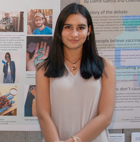
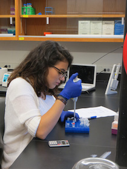
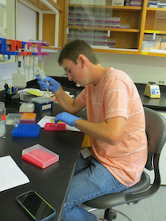
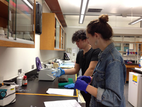
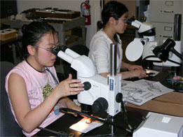
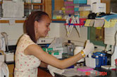

Several high school students worked in the Arachnology Lab supported by various internships. Many went on to undergraduate programs. We acknowledge and appreciate their work. If you are interested in interning in the Arachnology Lab at the AMNH please visit the Science Research Mentoring Program.
 Hritwik Paul |
 Cherie Qu |
 Azmi Anamika |
Nathan Auyeng, Aleyna Singer, Simon Au and Amrita Banerj came from the AMNH Science Research Mentoring Program, and volunteered at the Arachnida collections during the summer of 2018. They assisted with curatorial activities, helping to curate important collections of spiders and other arachnids, under the supervision of Lou Sorking and Pio Colmenares.
 Geeta Sharma |
 Sophia Castro |
 |
Tamar Cohen, volunteered at the AMNH during the summer of 2017. She worked in the Molecular Systematics Laboratory where they learned lab techniques and to perform PCRs under the supervision of Pio Colmenares.
|
Chelsea Silva and Billy Conlan volunteered at the AMNH during the summer of 2015. Both students worked in the Molecular Systematics Laboratory where they learned lab techniques and to perform PCRs under the supervision of Michelle Locke and Diogo Casellato.
|  Chelsea Silva |
 Billy Conlan |
|  | Eleanor Goetz and Sasha Reiter attended the AMNH Science Research Mentoring Program (SRMP) at the AMNH for the 2013-2014 academic year. Both students worked in the Molecular Systematics Laboratory where they learned to isolate, amplify, sequence, and edit DNA under the supervision of Stephanie Loria. |
 |
Adam Getzler, a student at Plainview Old-Bethpage JFK High School, volunteered at the AMNH during the summer of 2011, sequencing scorpion DNA to further his interest in genetics. He went on to a Bachelor's degree at the University of Chicago.
|
Michelle Bayefsky-Anand, a student at Ramaz Upper High School, worked in the Molecular Systematics Laboratory learning to extract, amplify, and sequence scorpion DNA under the supervision of Lauren Esposito and Lorenzo Prendini in 2008. |
|  | Jianhua Lin and Qiao Rong Huang attended the NSF High School Research Program in Genetics at the AMNH for two academic years (2005-2007). Both students learned to conduct measurements and record setal counts under the supervision of Jeremy Huff and Lorenzo Prendini (summer 2006). From fall 2006 they worked in the Molecular Systematics Laboratory extracting, amplifying, and sequencing scorpion DNA. |
Connie Cai and Melanie Ng attended the AMNH High School Science Research Program in Biodiversity at the AMNH for 10 months (September 2004-June 2005). Both students learned to sort, identify and database specimens, prepare labels, conduct measurements, record setal counts, and prepare photographs with visible and UV light, under the supervision of Lorenzo Prendini and Randy Mercurio. Ng also worked in the Molecular Systematics Laboratory, under the supervision of Rebecca Budinoff and Tripp MacDonald, where she learned to isolate, amplify, sequence, and edit DNA.
 Melanie Ng |
Connie Cai |
Bernard Laszczower and Boitumelo (Tumi) McCallum attended the NSF After-School Centers in Exploration and New Discovery (ASCEND) program at the AMNH for 8 months (October 2003-May 2004). Both students worked in the Molecular Systematics Laboratory, under the supervision of Lorenzo Prendini, Diana Pietri and Tarang Sharma, where they learned to isolate, amplify, sequence and edit DNA.
|  Boitumelo McCallum |
 Bernard Laszczower |